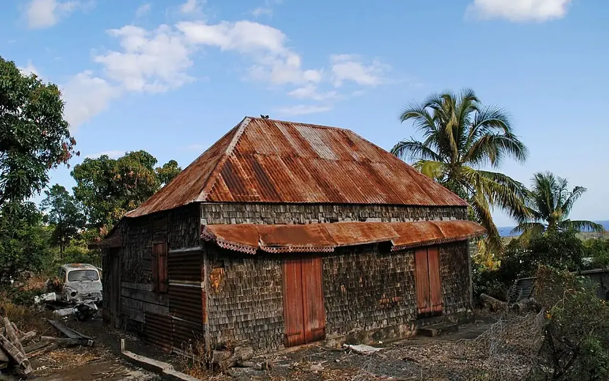

Observatoire expérimental
Observatoire national des territoires vivants
Rassembler des données publiques, des observations locales et des signalements qualifiés pour comprendre la vacance, les friches, le réemploi et les dynamiques de revitalisation.

Mission
Produire une connaissance utile, datée et explicable
L’Observatoire TVF n’a pas vocation à recopier des chiffres isolés. Il doit relier chaque donnée à une source, une date, un territoire, une définition et une limite d’usage. Les données nationales servent à comprendre les tendances ; les données locales permettent de structurer l’action.
Les signalements citoyens ne deviennent jamais automatiquement des données publiques. Ils doivent être vérifiés, dédupliqués, protégés et classés selon leur statut.
Une progression de long terme qui exige une lecture locale
Le recensement INSEE dénombre près de 3 millions de logements vacants en France en 2022, contre 2,47 millions en 2011. La vacance inclut toutefois des logements en attente de vente, de location, de règlement de succession, de travaux ou sans usage identifié. La vacance durable est le cœur de cible des politiques de remise en usage.
| Territoire | Parc total | Vacants | Part |
|---|---|---|---|
| France | 37 527 880 | 2 987 746 | 8,0 % |
| Auvergne-Rhône-Alpes | 4 671 276 | 394 947 | 8,5 % |
| Saint-Étienne | 101 006 | 12 313 | 12,2 % |
France 2011
2,47 M
France 2016
2,89 M
France 2022
2,99 M
Le millésime 2026 des données LOVAC est annoncé sur Zéro Logement Vacant. Son accès est réservé aux collectivités, services de l’État et partenaires habilités ; TVF ne doit donc pas republier d’adresses ou de données propriétaires sans base légale et convention.
Un enjeu visible, mais encore difficile à comparer nationalement
La vacance commerciale dépend fortement du périmètre retenu : centre-ville, rue, galerie, rez-de-chaussée actif ou ensemble communal. Les bases nationales d’équipements renseignent les commerces en activité, mais pas un taux de vacance homogène pour chaque commune. TVF doit donc publier la méthode avant le chiffre.
Règle de l’Observatoire : aucun taux de vacance commerciale n’est affiché sans périmètre cartographié, date de relevé, définition d’une cellule vacante et procédure de vérification.
Données nationales
Suivre les programmes ANCT, les publications Banque des Territoires et les observatoires de commerce en distinguant données publiques et études privées.
Relevé territorial
Compter les cellules sur un tracé stable, documenter les changements et vérifier les fermetures temporaires.
Qualification d’usage
Ajouter surface, accessibilité, loyer lorsqu’il est public, contraintes techniques et besoins du quartier.
Passer du point sur une carte à une stratégie de recyclage foncier
Cartofriches, porté par le Cerema, agrège des inventaires nationaux et locaux. Une fiche de friche ne signifie pas que le site est disponible, cessible ou compatible avec un projet. L’historique, la pollution, la propriété, les risques, les documents d’urbanisme et les coûts de remise en état conditionnent toute intervention.
Repérer
Mobiliser Cartofriches, BASIAS/CASIAS, documents d’urbanisme et connaissance locale.
Qualifier
Vérifier propriété, pollution, bâti, accès, réseaux, risques et usages voisins.
Prioriser
Comparer utilité territoriale, faisabilité, sobriété foncière et capacité de portage.
Mesurer le réemploi, pas seulement la sortie du statut de déchet
Le SDES indique que 310 millions de tonnes de déchets ont été produites en France en 2020. Les déchets minéraux, principalement issus de la construction, représentent 66 % des tonnages et 74 % sont valorisés. La valorisation inclut des traitements qui ne préservent pas nécessairement l’usage initial. L’Observatoire TVF distinguera donc réemploi, réutilisation, recyclage et autre valorisation.
Relier logement, commerce, foncier, services et cadre de vie
En 2025, l’ANCT indique que 244 communes sont lauréates d’Action Cœur de Ville. La phase 2023-2026 étend l’approche aux entrées de ville, quartiers de gare, adaptation climatique, sobriété foncière et mobilités. TVF s’inscrit dans cette logique transversale, sans se substituer aux programmes publics.
Habitat
Remettre en usage sans déplacer les difficultés sociales ou ignorer la qualité du logement.
Économie locale
Tester des usages adaptés aux besoins, aux flux et à la capacité réelle du marché.
Sobriété foncière
Privilégier l’existant et le recyclage urbain lorsqu’ils sont techniquement et socialement pertinents.
Un indicateur n’est public que s’il est défini et traçable
Collecte
Identifier source, licence, date et territoire.
Contrôle
Vérifier cohérence, doublons et limites.
Protection
Masquer adresses et contacts sensibles.
Qualification
Attribuer un statut et un responsable.
Publication
Diffuser uniquement le niveau autorisé.
Mise à jour
Dater, corriger et archiver les versions.
Sources principalesINSEE, dossiers complets territoriauxZéro Logement Vacant, Ministère du LogementCartofriches, CeremaSDES, bilan national des déchetsANCT, Action Cœur de Ville
Consulter le territoire pilote
Le dossier Saint-Étienne applique cette méthode à la première échelle locale documentée par TVF.
Un tableau de bord national à construire par preuves successives
L'Observatoire TVF doit distinguer les données officielles disponibles, les données territoriales à produire et les indicateurs internes qui n'existeront qu'après les premiers projets.
| Indicateur | Donnée ou statut | Source / condition |
|---|---|---|
| Logements vacants | 2 987 746 en France en 2022 | INSEE, recensement 2022 |
| Commerces vacants | Pas de taux national unique repris par TVF | Méthode locale nécessaire |
| Friches | Inventaires à consulter par territoire | Cartofriches, Cerema |
| Déchets produits | 310 millions de tonnes en 2020 | SDES, bilan national |
| Artificialisation | À analyser par millésime et territoire | Portail national de l'artificialisation |
| Impact TVF | Donnée non publiée tant que non mesuré | base de données sécurisée, validation interne |
Données et territoire pilote
Du constat à l'action : Observatoire national des territoires vivants
Cette page transforme des données dispersees en lecture opérationnelle pour decider, prioriser et suivre.
Problème
Les données existent mais restent souvent séparées : logement, commerce, foncier, environnement, insertion, financement.
Donnée utile
Sources mobilisables : INSEE, Cerema, ANCT, SDES, collectivités et jeux de données publics territoriaux.
Solution TVF
TVF prépare une méthode d'observation : reperer, qualifiér, cartographier, documenter et mettre à jour.
Méthode
Les projections sont séparées des résultats reels ; les indicateurs TVF restent à zero tant qu'ils ne sont pas vérifiés.
Acteurs
Collectivités, services de l'État, observatoires publics, chercheurs, associations, entreprises et habitants.
Impact visé
Aider les decideurs à passer du constat à la fiche projet territoriale, avec preuves et priorites lisibles.
FAQ
Questions fréquentes
Observatoire national des territoires vivants distingue sources, indicateurs, projections et données à valider.
Les chiffres TVF sont-ils déjà des résultats ?
Non. Dans Observatoire national des territoires vivants, les résultats propres à l'association ne doivent apparaître qu'après action réelle, validation et traçabilité.
Quelles sources sont privilégiées ?
Pour Observatoire national des territoires vivants, les sources prioritaires sont INSEE, SDES, ADEME, ANCT, Cerema, ministères, data.gouv.fr et données locales publiées.
Comment les indicateurs seront-ils mis à jour ?
Observatoire national des territoires vivants prévoit une mise à jour progressive via les formulaires, les validations territoriales et les planifiées connexions de données.
Chiffres clés France
Un enjeu national : vacance, friches et ressources gaspillées
TVF doit être compris comme un outil de coordination : les données nationales montrent l'ampleur du sujet, mais l'action ne peut être crédible qu'à partir de diagnostics locaux sourcés.
Ce qu'il faut éviter
Un chiffre national ne suffit pas à lancer un projet. Il faut distinguer vacance statistique, vacance durable, friche disponible, propriété maîtrisée, contraintes environnementales et faisabilité économique.
Ce que l'observatoire TVF doit apporter
Un langage commun entre habitants, propriétaires, collectivités, entreprises et financeurs : localisation, qualification, statut, ressources mobilisables, niveau de maturité et indicateurs d'impact vérifiables.
Sources : INSEE France, SDES déchets, Cartofriches Cerema, Fonds friches.
Passer à l’action
Choisir le parcours adapté à votre rôle
Chaque demande doit être orientée vers un cadre clair : besoin territorial, propriétaire, ressource, financement, bénévolat ou coopération institutionnelle.